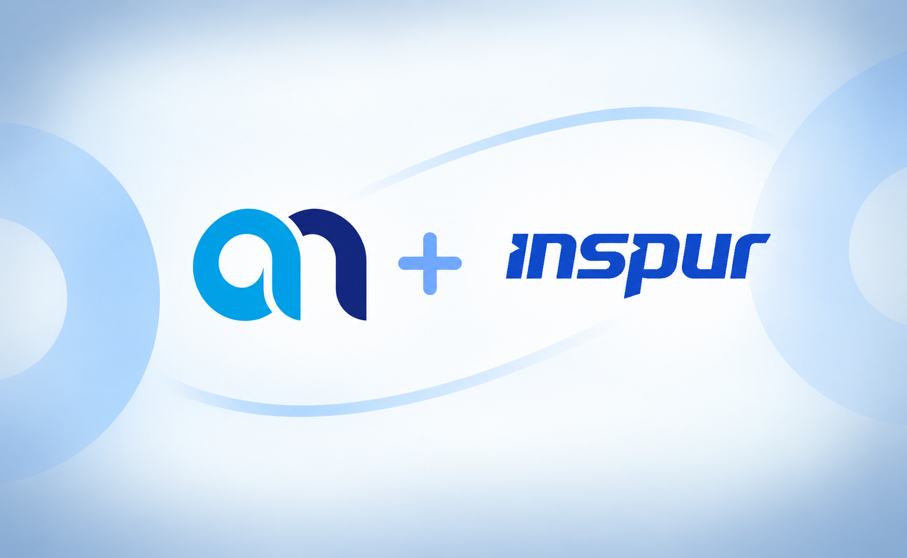

News · September 1, 2026 · by OpenAN

The OpenAN community is pleased to announce that Inspur Communication Information Systems Co. Ltd. has joined the project as an ecosystem participant, bringing a global infrastructure perspective to the ecosystem for agent-driven autonomous networks.
Inspur Communication Information Systems Co. Ltd. is a global provider of computing and AI infrastructure, delivering the servers, cloud platforms, and intelligent computing power behind some of the world's largest digital networks. With expertise spanning data centers, cloud, and AI, Inspur brings an infrastructure-first perspective to the evolution of autonomous networking.
Intelligent network agents need strong, open foundations. Inspur's participation strengthens OpenAN where compute, connectivity, and AI converge — reinforcing the infrastructure layer on which agent-driven autonomous networks will run, and broadening the ecosystem's ability to turn open concepts into deployable, scalable systems.
Follow the GitHub repositories and the project website for the latest updates.